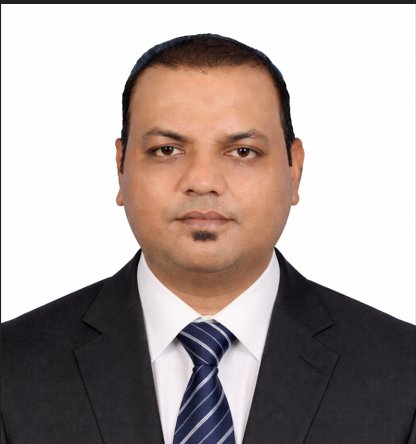

Satish Kumar
Jaiswal.
Instrumentation & Control Engineer · Commissioning Specialist
15+ years of experience in commissioning, maintenance, and industrial control systems across oil & gas, petrochemical, green hydrogen, utilities, and power projects in the GCC and Asia.

Engineering in practice
Loop checking, FAT/SAT, DCS and SIS validation, cause & effect, commissioning, startup, and maintenance.
Explore the free tools →Project and career experience
Instrument Pre-Commissioning Engineer
CCC — Air Products · NEOM Green Hydrogen Complex · Saudi Arabia · USD 8.4B
- Verification role across a 50,000+ loop scope, ahead of schedule · 99.2% first-pass accuracy
- DCS/SIS validation — Siemens PCS7, ESD, F&G, SCADA, metering, BMS & telecom pre-commissioning across all trains
- Interlock testing against C&E matrix · fail-safe logic · control philosophy validation
- Coordinating FAT/SAT with OEMs · ITR/ICAPS sign-off · punch-list close-out · mechanical completion
- Supervising 15+ technicians · coordinating EPC contractors and Air Products client team
Assistant Superintendent — Utility Maintenance
PEC Ltd · NSRP (Asia's Largest Single-Train Refinery) · Vietnam
- Promoted to lead full utility commissioning — GTGs, STGs, boilers, HRSGs, water treatment
- Honeywell Experion PKS — DCS validation & SCADA commissioning role across 8,000+ control points
- F&G integrity testing, SIS commissioning, PLC interlock validation
- Developed KPIs for plant performance · drove continuous improvement
- Supervised 30+ engineers and technicians with zero safety incidents
Senior Instrument Engineer
PEC Ltd · NSRP Refinery · Vietnam
- Verification role across a 12,000+ loop-test scope in DCS, SIS, SCADA systems
- Control narrative review and implementation vs P&IDs
- RCA investigations — reduced plant downtime by ~25%
- 3,000+ instruments calibrated and performance-optimised
Instrumentation & Control Engineer
PEC Ltd · NSRP · Vietnam
5,000+ loop checks · FAT/SAT · loop diagrams · data sheets · I/O lists · interlock philosophies
I&C Pre-Commissioning Engineer
Bechtel · Al Taweelah Alumina · UAE · ADNOC
Honeywell Experion · SILbus · C&E matrices · FAT/SAT · ITR sign-off
I&C Commissioning & Maintenance
JGCS JV · NSRP · Vietnam · NH3/H2 Plant
Plant start-up · SCADA · Allen Bradley PLC · ESD logic · functional testing
Instrument Commissioning Engineer
Hyundai Eng · ADNOC/TAKREER · UAE
Foxboro Evo DCS · Triconex ESD · BMS · C&E matrices · ADNOC approvals
Technical experience
Control systems
Foxboro, Honeywell Experion, Yokogawa CENTUM VP, Triconex SIS, PLC, SCADA, and HART.
Commissioning & maintenance
Loop checking, calibration, functional testing, FAT/SAT, C&E verification, troubleshooting, RCA, ITRs, and handover.
Education
B.Tech, Electronics & Communication Engineering, UPTU, 2012. Industrial Automation training.
Let’s connect
For instrumentation opportunities, project discussions, or tool feedback, contact me directly.